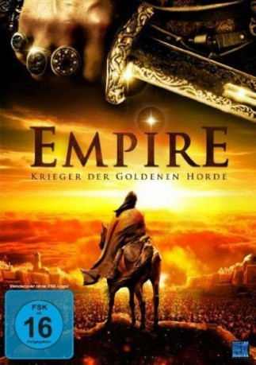

#9822 Empire - Krieger der goldenen Horde
Alternativ: The Horde (Englischer Titel)
 
 IMDB-Wertung: 6.2 / 10
IMDB-Wertung: 6.2 / 10  Metascore: 0
Metascore: 0 
Im 14. Jahrhundert zittert Russland vor der ständigen Bedrohung durch eine Tartareninvasion. Deshalb bleibt Alexis, dem orthodoxen Metropolit von Moskau, auch keine Wahl, als ihn Jani-Beg, der aktuelle Gewaltmensch auf dem Tartarenthron, nach Usbekistan zitiert, um an der erst kürzlich erblindeten Mutter des Fürsten eines jener Wunder zu wirken, wie sie Christen der Legende nach eben so zustande bringen. Als mit dem Wunder nicht gleich los geht, werden die Gastgeber ungemütlich, und Alexis gerät in Bedrängnis.
Jahr: 2012
Dauer: 129 Minuten
FSK: 16
Land: Russland Studio: New KSMTonspuren:
Untertitel: Deutsch,
Auflösung: 1080p (1920x816) Größe: 8099 MB
Genre: Drama, Geschichte, Biographie
Regisseur: Andrey Proshkin
Drehbuch: Yuriy Arabov
Soundtrack: Alexei Aigui
Darsteller:
- Maksim Sukhanov als Metropolitan Aleksei
- Aleksandr Yatsenko als Fedka
- Andrey Panin als Khan Tinibek
- Aleksey Shevchenkov als Vasili the stoker
- Romuald Andrzej Klos als Ambasador
- Rinat Khairullin als voevoda Djanibeka
- Sergey Makarov als
- Roza Khayrullina als Taidula
- Innokenti Dakaiarov als Khan Dzhanivek
- Vitaliy Khaev als Prince Ivan
- Aleksey Yegorov als Badakul
- Fedot Lvov als Timer
- Moge Oorzhak als Berdibek
- Daulet Abdygaporov als
- Tolepbergen Baisakalov als
- Yuriy Pronin als
- Nikolai Shatokhin als
- Antonio Villani als
- Pyotr Yandane als
- Yunchen Zhuan als
Datei: X:\2012(A-F)\Empire - Krieger der goldenen Horde (2012, FSK16, 1920x816).mkv seit 29.10.2018
Festplatte: HD 2012(A-M)
 Es gibt insgesamt 102 Filme in der Gruppe '2012(A-F)'
Es gibt insgesamt 102 Filme in der Gruppe '2012(A-F)'